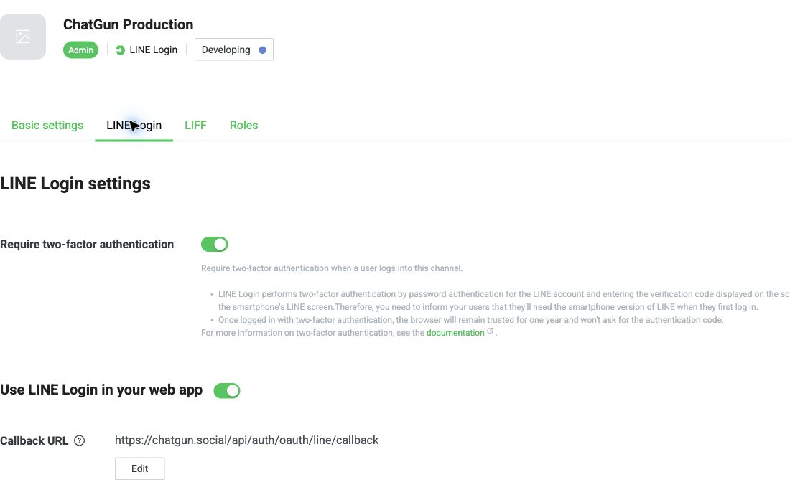

19 October 2026 · Draft PR #17 · branch codex/issue-16-presence-no-demo.
NO-GO for Production Beta. LINE console access is now verified, not blocked at login. The correct Developing channel and exact callback are confirmed. Genuine application login is instead blocked by the intentionally disabled Production OAuth/admission gate and unresolved policy/activation approvals. No real owner, OAuth identity, invitation, session or role was fabricated. No Production deployment, database mutation, media binding, public signup or provider publishing occurred.
Production: 6c824ab0ecf5e70f414e7d34d74b7abe7bae3a8c, unchanged. /api/health, /api/auth/config and /api/social/config all return 200 JSON. Custom domain Active; API-only Functions routing and static no-polling behavior remain intact. No current Error1046 observed.
Isolated Preview: 926aa1e85d50a48fde41ffc1af193349e5f99ff1, with the LINE validation fixes deployed behind closed UI. Its D1/R2 are isolated issue13 resources, not the original staging fixture database or Production. Actual SHA/asset/browser checks.
Production DB chatgun-auth (9738a051-d914-42d0-8e7b-8098ef2b959d) stays at migration12. Users/identities/profiles remain0, all baseline aggregate counts unchanged and FK0. Original staging count fingerprint unchanged; no reset, cleanup, synthetic account issuance or media changes. The Production backup digest and 0700/0600 permissions were reverified and an actual fresh Time Travel bookmark was stored privately; no restore. Rehearsals13–15 remain passed, not applied. chatgun-media-production is private, r2.dev off, public custom domains0 and still unbound. Counts/bindings · Recovery/private storage/gates · Staging integrity.
| Check | Result and actual observation |
|---|---|
| Provider/channel/type/status | PASS: ChatGun provider2005640887; ChatGun Production2012039306; LINE Login; Developing. Existing channel only, no publishing or creation. |
| Authorized roles | PASS for console metadata: current console role Admin, one Admin entry, no Tester entries observed. BLOCKED for intended LINE app-login identity confirmation; no personal identifiers recorded or access changed. |
| Platform/security | PASS: Web app, web login enabled, require-two-factor toggle enabled. No challenge bypass or security setting changes. |
| Callback | PASS exact saved https://chatgun.social/api/auth/oauth/line/callback. Production channel has no registered isolated Preview callback; no new redirect added silently. |
| Permissions/scopes | PASS: PROFILE / OPENID_CONNECT. Email permission Unapplied. Application requests only openid profile with S256 PKCE, state and nonce. |
| Privacy URL | PASS saved URL https://chatgun.social/privacy.html. BLOCKED for approved published legal content: the closed release serves a preparation notice, not the unapproved draft policy. |
| Terms URL | MISSING: optional field has no saved URL. Set only after owner/qualified legal approval and actual approved publication; do not register an unpublished draft as an effective policy. |
| Cloudflare credentials | PASS metadata: LINE_CLIENT_ID present and LINE_CLIENT_SECRET encrypted. BLOCKED exact client/secret pairing: Pages secret values are not retrievable through metadata and no genuine code exchange can run while OAuth is disabled. A matching application label is not proof. No Preview credentials copied. |
Sanitized checklist. Screenshot excludes personal identity and Channel Secret:

Verified against LINE token-validation documentation and official PKCE support. Signature validation is delegated to the documented server-side endpoint, then local claim checks enforce the expected transaction.
Source security also retains secure HttpOnly host-only session/OAuth cookies, SameSite=Lax, no Domain attribute, hashed durable sessions, CSRF double-submit checks, one-time D1 flow claim, session-bound linking/recent deletion reauthentication, Turnstile hostname/action validation and invitation binding. Actual Production session issuance remains untested while disabled.
| Scenario | Actual result / boundary |
|---|---|
| Start genuine LINE login | BLOCKED: actual Production POST /api/auth/oauth/line/start returns503 JSON oauth_unavailable before Turnstile, provider redirect or D1 flow creation. No session cookie issued. Isolated Preview also keeps OAuth disabled and is not registered for this Production channel. |
| Human LINE credentials, consent, callback, session, refresh, logout/relogin | BLOCKED / NOT RUN. No CAPTCHA, MFA, password or consent was handled. The Developing console's Admin role does not establish successful ChatGun OAuth. |
| Actual provider invalid-token rejection | PASS narrow negative test: one malformed non-personal token sent to LINE's official verify endpoint with channel2012039306 returns400 JSON. No real token, secret, identity or code. This is not a valid-token or credential-pair success test. |
| Missing/invalid state, cancel, replay, expiry | PASS local callback integration. Production missing/untrusted callbacks correctly stop at provider-disabled gate; NOT claimed Production state-validation coverage or human consent cancellation. |
| Invalid/expired token, wrong audience/issuer/nonce, malformed subject | PASS simulated official-verifier responses in local tests. Genuine provider-token mismatch tests NOT RUN; no real provider records altered. |
| Missing/invalid invitations, duplicate/cross-user linking, provider identity mismatch, recent-auth deletion, logout/revoked session | PASS relevant local integration/security regression suite. Genuine Production account/linking/session scenarios BLOCKED, no two authorized human identities available in an activated environment. |
| Unauthorized Developing-channel user | BLOCKED / NOT RUN: no separately authorized non-role human test identity supplied. No fabricated LINE user or channel-role mutation. |
| Owner acceptance/onboarding and real D1 identity persistence | BLOCKED / NOT RUN until approved provider/admission/policy release. No owner UUID exists in Production to confirm or grant a role to. Future internal ID must be shown privately for explicit approval, never logged or posted. |
| Real social Journeys A–G | BLOCKED: two genuine approved adults, migrations, private-media binding, operational/legal and feature approvals required. Discovery/location, direct Chat, public/private gallery, presence, block/report/moderation and deletion were not claimed real-human passes. |
160 unit/integration/security PASS, 0 FAIL, 0 SKIP. 10 local Chromium PASS, 0 FAIL, 0 SKIP at390/768/1440px. Local provider/Turnstile responses are explicit component simulations. No new remote mock users or identities created this workstream. 35 local + 35 isolated Preview + 35 Production closed-release checks passed, including loaded JS/CSS digests, no-JS prelaunch, no fictional cards/Online, no overflow, no startup API polling and disposable exact-key demo-recovery tests. Owner browser storage untouched.
CI: completed / success, recorded run, exact head 926aa1e85d50a48fde41ffc1af193349e5f99ff1. Historical demo-only browser suites and real Android/iPhone hardware were NOT run; viewports are not device certification.
Summary · Local browser evidence · Live release checks · Isolated Preview checks. Production screenshots: 390px · 768px · 1440px.
Explicit proposal; executionAllowed=false. No implied approval from this report.
If the owner prefers genuine testing in an isolated environment first, that is a separate approval to register its exact callback on this existing Production channel and provision dedicated test access securely. It must not be achieved by reusing Preview credentials, fabricating identities or redirecting the Production callback around its gates.
Final: LINE configuration inspection and safe hardening completed; Production Beta remains NO-GO at the explicit activation/legal/real-human test gates. PiggyPrice/original NEAR unchanged, existing fixtures preserved, PR #17 remains Draft.